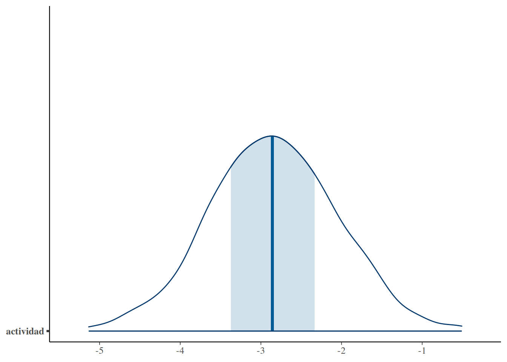

set.seed(123)
# Simular actividad física y glicemia
datos <- tibble(
actividad = rnorm(120, 3, 1),
glicemia = 95 - 4 * actividad + rnorm(120, 0, 8)
)
# Modelar el efecto de la actividad física en la glicemia
modelo <- stan_glm(
glicemia ~ actividad,
data = datos,
family = gaussian(),
chains = 2,
iter = 1000,
refresh = 0
)19.- Tomar decisiones clínicas
1. Intuición
Hasta ahora, gran parte del libro se ha enfocado en algo fundamental:
- construir modelos
- interpretar distribuciones
- entender incertidumbre
- pensar probabilísticamente
Pero en medicina, el objetivo final no es solamente interpretar datos.
👉 El objetivo es tomar decisiones.
Y aquí aparece una idea muy importante:
La decisión clínica no elimina la incertidumbre, la gestiona.
La medicina siempre ha sido bayesiana
Aunque muchas veces no lo decimos explícitamente, la práctica clínica cotidiana ya funciona de manera bayesiana.
Un médico rara vez tiene certeza absoluta.
En cambio, trabaja con grados de probabilidad:
- “Probablemente tiene resistencia a la insulina”
- “Es poco probable que esto sea benigno”
- “Existe alto riesgo de progresión”
- “Vale la pena intervenir temprano”
Eso es pensamiento bayesiano.
No esperamos certeza total.
Tomamos decisiones usando:
- información incompleta
- evidencia acumulada
- experiencia clínica
- evaluación de riesgos
Un ejemplo clínico cotidiano
Imagina un paciente con:
- IMC elevado
- glicemia ligeramente alta
- baja actividad física
- insulina elevada
Todavía no tiene diabetes diagnosticada.
Entonces aparece la pregunta clínica real:
👉 ¿Intervenimos ahora o esperamos?
Y aquí aparece un punto central:
No decidir también es una decisión.
Esperar tiene consecuencias:
- progresión metabólica
- aumento de inflamación
- acumulación de grasa visceral
- deterioro de sensibilidad a la insulina
La inacción también tiene riesgo.
Probabilidad ≠ certeza
En medicina, casi nunca trabajamos con 100% de seguridad.
Muchas decisiones importantes ocurren con:
- 60%
- 75%
- 85%
- 90%
de probabilidad.
Por ejemplo:
- una probabilidad moderada puede justificar observación cercana
- una probabilidad alta puede justificar intervención intensiva
- una probabilidad extremadamente alta puede justificar tratamiento farmacológico
La clave es entender que:
👉 la acción depende del balance entre riesgo y beneficio.
Umbrales de decisión
Los umbrales no son reglas universales.
Son puntos prácticos donde sentimos que:
- el beneficio esperado supera el riesgo
- el costo de no actuar empieza a ser alto
Por ejemplo:
| Probabilidad estimada | Posible acción |
|---|---|
| ~60% | observar y repetir controles |
| ~75% | iniciar intervención de estilo de vida |
| ~90% | considerar intervención intensiva |
Esto no es matemática rígida.
Es razonamiento clínico probabilístico.
Trade-offs clínicos
Toda intervención tiene costos.
No solamente económicos.
También:
- adherencia
- efectos adversos
- carga psicológica
- tiempo
- fatiga del paciente
Por eso las decisiones clínicas siempre implican trade-offs.
Por ejemplo:
Cambios de estilo de vida
Beneficios:
- bajo riesgo
- mejora metabólica amplia
Costos:
- adherencia difícil
- resultados lentos
Medicación
Beneficios:
- reducción más rápida del riesgo
Costos:
- efectos adversos
- costo económico
- medicalización
Riesgo cardiometabólico acumulativo
Uno de los problemas de la obesidad es que el daño metabólico suele acumularse lentamente.
La combinación de:
- hiperinsulinemia
- inflamación crónica
- sedentarismo
- adiposidad visceral
puede aumentar gradualmente:
- glicemia
- presión arterial
- disfunción endotelial
- riesgo cardiovascular
Muchas veces el objetivo clínico es intervenir antes de que aparezca la enfermedad manifiesta.
El cambio más importante
En un enfoque frecuentista clásico, muchas veces la pregunta es:
“¿El efecto es estadísticamente significativo?”
En un enfoque bayesiano, la pregunta cambia a:
“¿Qué tan probable es que este paciente se beneficie de intervenir?”
Ese cambio es enorme.
Porque acerca el análisis estadístico a la práctica clínica real.
2. Ejemplo simple (simulación en R)
Supongamos que ya tenemos un modelo bayesiano simple que evalúa la relación entre actividad física y glicemia.
La pregunta clínica no será:
❌ “¿El coeficiente es significativo?”
La pregunta será:
✅ “¿Qué tan probable es que menor actividad física se asocie con peor glicemia?”
Simulación sencilla
Extraer la distribución posterior
posterior <- as.matrix(modelo)Veamos la probabilidad de que mayor actividad física reduzca la glicemia.
mean(posterior[, "actividad"] < 0)[1] 1¿Qué significa esto?
👉 Existe una alta probabilidad de que mayor actividad física se asocie con menor glicemia.
Eso no significa:
- certeza absoluta
- causalidad perfecta
- garantía individual
Pero sí sugiere una evidencia suficientemente fuerte para considerar intervención.
Visualizando la incertidumbre
mcmc_areas(
posterior,
pars = "actividad"
)
La idea importante es:
👉 no existe un único valor verdadero
Existe una distribución de valores plausibles.
Pasando de interpretación a decisión
Aquí ocurre el cambio conceptual importante.
La pregunta clínica ya no es:
❌ “¿El intervalo incluye cero?”
Ahora es:
✅ “¿La evidencia es suficiente para actuar?”
Una posible interpretación clínica
Si:
- la intervención tiene bajo riesgo
- el costo es relativamente pequeño
- el beneficio potencial es grande
entonces una probabilidad del 97% puede ser más que suficiente para actuar.
3. Ejemplo aplicado con NHANES
Ahora usemos una situación más realista inspirada en NHANES.
Trabajaremos con variables ya conocidas:
- IMC (BMXBMI)
- glicemia (LBXSGL)
- sedentarismo (PAD680)
- insulina (LBXIN)
Supongamos que ya construimos un modelo previamente.
Modelo simplificado
# Seleccionar las variables que voy a usar
nhanes_modelo <- df_obesidad %>%
select(LBXSGL, # glicemia
BMXBMI,# índice de masa corporal
BMXWAIST, # cintura
PAD680, # minutos al día de actividad sedentaria
LBXIN # insulina
) %>%
drop_na() %>%
filter(
LBXSGL <= 600,
BMXBMI < 100,
BMXWAIST < 200,
PAD680 < 1000,
LBXIN < 70
)
# Modelar el efecto de imc, sedentarismo e insulina sobre la glicemia
modelo_nhanes <- stan_glm(
LBXSGL ~ BMXBMI + PAD680 + LBXIN,
data = nhanes_modelo,
family = gaussian(),
chains = 2,
iter = 1000,
refresh = 0
)Extraer posterior
# Extraer la distribución posterior
posterior <- as.matrix(modelo_nhanes)Pregunta clínica 1
¿Qué tan probable es que mayor IMC se asocie con mayor glicemia?
# Ver la probabilidad de que imc se asocie con mayor glicemia:
mean(posterior[, "BMXBMI"] > 0) # produce: [1] 1Interpretación:
👉 Existe una alta probabilidad de que un mayor IMC se asocie con mayor glicemia.
Pregunta clínica 2
¿Qué tan probable es que más sedentarismo se asocie con mayor glicemia?
# Ver la probabilidad de que el sedentarismo se asocie con mayor
# glicemia
mean(posterior[, "PAD680"] > 0) # produce: 0,73[1] 0.73Interpretación:
👉 Existe un 73% de probabilidad de que el sedentarismo se relacione con mayor glicemia.
Pregunta clínica 3
¿Qué tan probable es que la insulina elevada se asocie con peor glicemia?
# Ver la probabilidad de que la insulina se asocie con mayor glicemia
mean(posterior[, "LBXIN"] > 0) # produce: [1] 1Interpretación:
👉 La hiperinsulinemia probablemente refleja un estado metabólico deteriorado asociado con peor regulación glucémica.
Lo importante no es el número exacto
La medicina no funciona como una calculadora exacta.
Lo importante es:
- dirección del efecto
- magnitud plausible
- nivel de incertidumbre
- costo de equivocarse
Caso clínico integrado
Imaginemos ahora un paciente con:
| Variable | Resultado |
|---|---|
| IMC | 36 |
| Glicemia | 112 |
| Actividad física | Muy baja |
| Insulina | Elevada |
Todavía no tiene diabetes franca.
Pero el patrón metabólico es preocupante.
¿Qué hacemos?
Aquí el pensamiento bayesiano se vuelve clínico.
Posibilidad 1 — Observar solamente
Ventajas:
- menos intervención
- menor carga inicial
Riesgos:
- progresión silenciosa
- aumento de resistencia a la insulina
- inflamación persistente
Posibilidad 2 — Intervención intensiva de estilo de vida
Ventajas:
- bajo riesgo biológico
- mejora sistémica
- posible reversión temprana
Desventajas:
- adherencia difícil
- resultados lentos
Posibilidad 3 — Tratamiento farmacológico temprano
Ventajas:
- reducción más rápida del riesgo metabólico
Desventajas:
- costos
- efectos adversos
- medicalización temprana
El modelo no decide por nosotros
Este es un punto crucial.
👉 El modelo ayuda a estimar incertidumbre.
Pero:
- valores del paciente
- contexto social
- adherencia
- costos
- riesgos
también forman parte de la decisión.
4. Interpretación clínica
El verdadero objetivo del enfoque bayesiano
El objetivo no es producir números sofisticados.
El objetivo es:
👉 tomar mejores decisiones bajo incertidumbre.
La obesidad como acumulación de riesgo
En muchos pacientes:
- la glicemia aumenta lentamente
- la hiperinsulinemia aparece antes
- la inflamación crónica se mantiene silenciosa
- la grasa visceral progresa gradualmente
Esperar “certeza absoluta” puede significar intervenir demasiado tarde.
Pensamiento clínico probabilístico
El enfoque bayesiano se parece mucho a cómo razona un clínico experimentado.
Por ejemplo:
“No estoy 100% seguro de que este paciente progrese a diabetes, pero el riesgo es suficientemente alto como para actuar ahora.”
Eso es medicina real.
Incertidumbre no significa ignorancia
Muchas veces los estudiantes sienten incomodidad cuando descubren que:
- no existe certeza absoluta
- los modelos tienen variabilidad
- las decisiones son probabilísticas
Pero en realidad:
👉 reconocer incertidumbre mejora las decisiones.
Porque evita:
- exceso de confianza
- falsas certezas
- simplificaciones peligrosas
El costo de no intervenir
Un insight muy importante es:
No decidir también es una decisión.
Y puede ser una decisión costosa.
En obesidad y resistencia a la insulina:
- el daño suele acumularse lentamente
- las alteraciones aparecen antes del diagnóstico formal
- el riesgo cardiometabólico puede crecer silenciosamente
Umbrales personales y clínicos
Distintos médicos pueden actuar con diferentes niveles de certeza.
Por ejemplo:
- algunos intervienen temprano
- otros prefieren observar más tiempo
- algunos priorizan evitar sobretratamiento
- otros priorizan prevención agresiva
El enfoque bayesiano permite hacer explícitas esas diferencias.
El rol del paciente
La decisión clínica moderna no depende solamente del médico.
También importa:
- preferencias del paciente
- tolerancia al riesgo
- capacidad de adherencia
- situación económica
- contexto familiar
El modelo estadístico es solamente una parte del sistema de decisión.
Mensaje final del capítulo
👉 La decisión clínica no elimina la incertidumbre, la gestiona.
Y eso cambia profundamente la forma de entender:
- riesgo
- prevención
- obesidad
- inflamación
- resistencia a la insulina
El pensamiento bayesiano nos recuerda algo muy humano:
actuar clínicamente no significa tener certeza absoluta; significa tomar la mejor decisión posible con la información disponible.
Ejercicios
Ejercicio 1 — Certeza vs decisión
Imagina un paciente con:
- IMC = 34
- glicemia = 108
- actividad física baja
- insulina elevada
Un modelo bayesiano sugiere:
mean(posterior[, "LBXIN"] > 0)
Resultado:
0.91
Preguntas
- ¿Qué significa clínicamente ese 0.91?
- ¿Eso implica certeza absoluta?
- ¿Crees que ya existe suficiente evidencia para intervenir?
- ¿Qué riesgos existen si decides esperar?
Ejercicio 2 — No decidir también es decidir
Un médico decide:
“Todavía no voy a intervenir porque el paciente aún no tiene diabetes.”
Preguntas
- ¿Por qué esa decisión también implica riesgo?
- ¿Qué procesos fisiopatológicos podrían seguir avanzando silenciosamente?
- ¿Qué consecuencias podría tener intervenir demasiado tarde?
Ejercicio 3 — Umbrales personales
Dos médicos interpretan el mismo resultado:
mean(posterior[, "BMXBMI"] > 0)
Resultado:
0.78
Médico A
“Eso es suficiente para actuar.”
Médico B
“Todavía prefiero observar.”
Preguntas
- ¿Cuál de los dos está “correcto”?
- ¿Por qué los umbrales clínicos pueden variar?
- ¿Qué factores podrían influir en esa diferencia?
Ejercicio 4 — Traducir probabilidades a lenguaje clínico
Interpreta clínicamente cada uno de estos resultados:
a)
mean(posterior[, "PAD680"] < 0)
Resultado:
0.62
b)
mean(posterior[, "LBXIN"] > 0)
Resultado:
0.97
c)
mean(posterior[, "BMXBMI"] > 0)
Resultado:
0.51
Preguntas
Para cada caso responde:
- ¿Qué tan fuerte es la evidencia?
- ¿Intervendrías clínicamente?
- ¿Preferirías observar más datos?
- ¿Qué tipo de intervención tendría más sentido?
Ejercicio 5 — Comparando riesgos
Supón dos posibles intervenciones:
| Intervención | Beneficio esperado | Riesgo |
|---|---|---|
| Cambios de estilo de vida | Moderado-alto | Muy bajo |
| Medicación intensiva | Alto | Moderado |
El modelo muestra:
0.74
de probabilidad de empeoramiento metabólico.
Preguntas
- ¿Qué intervención parece más razonable inicialmente?
- ¿Por qué el riesgo de la intervención importa tanto?
- ¿Necesitamos el mismo nivel de certeza para todas las intervenciones?
Ejercicio 6 — Caso clínico integrado
Paciente:
| Variable | Resultado |
|---|---|
| IMC | 37 |
| Glicemia | 115 |
| Actividad física | Muy baja |
| Insulina | Elevada |
Resultados del modelo:
mean(posterior[, "BMXBMI"] > 0) # 0.95
mean(posterior[, "PAD680"] < 0) # 0.88
mean(posterior[, "LBXIN"] > 0) # 0.98
Preguntas
- ¿Qué patrón fisiopatológico observas?
- ¿Qué te preocupa más clínicamente?
- ¿Intervendrías ahora o esperarías?
- ¿Qué tipo de intervención priorizarías?
- ¿Cómo explicarías la incertidumbre al paciente?
Ejercicio 7 — Comunicación clínica
Imagina que debes explicarle al paciente este resultado:
0.89
de probabilidad de que su baja actividad física esté empeorando su control glucémico.
Tu objetivo
Explicarlo:
- sin lenguaje estadístico complejo
- sin generar miedo innecesario
- siendo honesto sobre la incertidumbre
Ejercicio 8 — La ilusión de certeza
Reflexiona sobre esta frase:
“La medicina moderna muchas veces actúa como si necesitara certeza absoluta para prevenir enfermedades.”
Preguntas
- ¿Estás de acuerdo?
- ¿Qué problemas puede generar esperar demasiada certeza?
- ¿Cómo ayuda el pensamiento bayesiano a prevenir antes?
Ejercicio 9 — Obesidad y acumulación de riesgo
Explica con tus propias palabras:
👉 ¿Por qué la obesidad puede entenderse como un proceso de acumulación probabilística de riesgo?
Intenta relacionar:
- inflamación
- hiperinsulinemia
- grasa visceral
- glicemia
- progresión lenta
Ejercicio 10 — Tu filosofía clínica
Imagina que eres el médico responsable de una clínica metabólica.
Preguntas
- ¿Qué nivel de probabilidad te haría intervenir temprano?
- ¿Prefieres prevenir agresivamente o esperar más evidencia?
- ¿Qué riesgos tiene cada enfoque?
- ¿Cómo equilibrarías:
- beneficio
- costo
- adherencia
- incertidumbre?
Ejercicio 11 — Interpretación rápida
¿Qué significa este código?
mean(posterior[, "BMXBMI"] > 0)
Explícalo:
- estadísticamente
- clínicamente
Ejercicio 12 — Cambiando el umbral
Supón:
mean(posterior[, "PAD680"] < 0) # 0.72
Completa la tabla:
| Umbral personal | Acción |
|---|---|
| 60% | ? |
| 75% | ? |
| 90% | ? |
Ejercicio 13 — Distribuciones, no números únicos
Explica por qué esta idea es tan importante:
“El objetivo no es encontrar el valor verdadero exacto, sino un rango plausible de efectos.”
Ejercicio 14 — Pensamiento bayesiano completo
Escribe un pequeño análisis clínico (1–2 páginas) para un paciente con:
- obesidad
- glicemia alterada
- sedentarismo
- hiperinsulinemia
Tu análisis debe incluir:
1. Interpretación fisiopatológica
Relaciona:
- resistencia a la insulina
- inflamación
- riesgo cardiometabólico
2. Interpretación probabilística
Explica:
- por qué no necesitas certeza absoluta
- cómo usarías probabilidades para actuar
3. Plan de decisión clínica
Discute:
- cuándo intervenir
- qué intervención elegir
- riesgos y beneficios
- incertidumbre residual